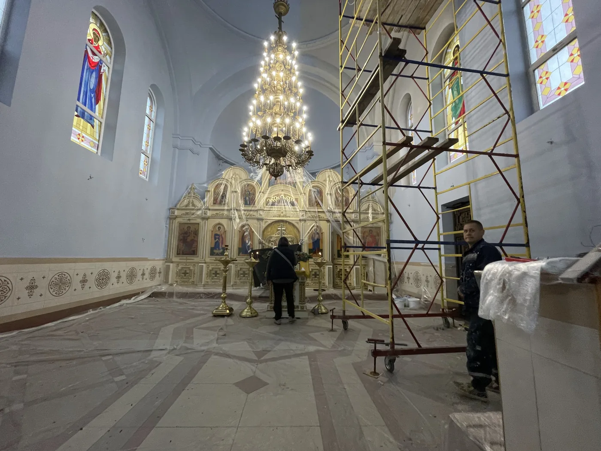

В дни служб храм открывается раньше и закрывается позже.
Храм Архистратига Михаила в Туапсе
Перерыв 13:00–14:00.

Наш храмТуапсе
Новости
Последние новости


14 ноября 2026
Ремонтные работы в храме
Дорогие братья и сестры! В храме ведутся ремонтные работы по покраске стен и потолка. Приносим свои извинения за доставленные неудобства. Службы проводятся по расписанию.
Расписание богослуженийО приходе
Под покровом небесного воеводы
Наш приход назван в честь святого Архистратига Михаила, предводителя небесных сил. Имя «Михаил» в переводе с древнееврейского значит «Кто как Бог».
Мы собираемся на молитву, чтобы вместе благодарить Бога, учиться любви и поддерживать тех, кто рядом. Приходите на службу, на беседу со священником или просто зажечь свечу.
Тропарь Архистратигу Михаилу, глас 4
Небесных воинств Архистратизи, молим вас присно мы недостойнии, да вашими молитвами оградите нас кровом крил невещественныя вашея славы, сохраняюще нас припадающих прилежно и вопиющих: избавите нас от бед, яко чиноначальницы Вышних Сил.
Разделы сайта
Что вы найдёте на сайте
Молитва
Богослужения
Расписание служб, требы и таинства.
Открыть КалендарьПраздники
Дни памяти Архистратига Михаила.
Открыть ДетямВоскресная школа
Занятия для детей и подростков.
Открыть МолодёжиМолодёжное движение
Встречи, общение и добрые дела.
Открыть ГалереяФотографии
Наш храм и жизнь прихода.
Открыть СвязьКонтакты
Адрес, телефон и как к нам добраться.
Открыть